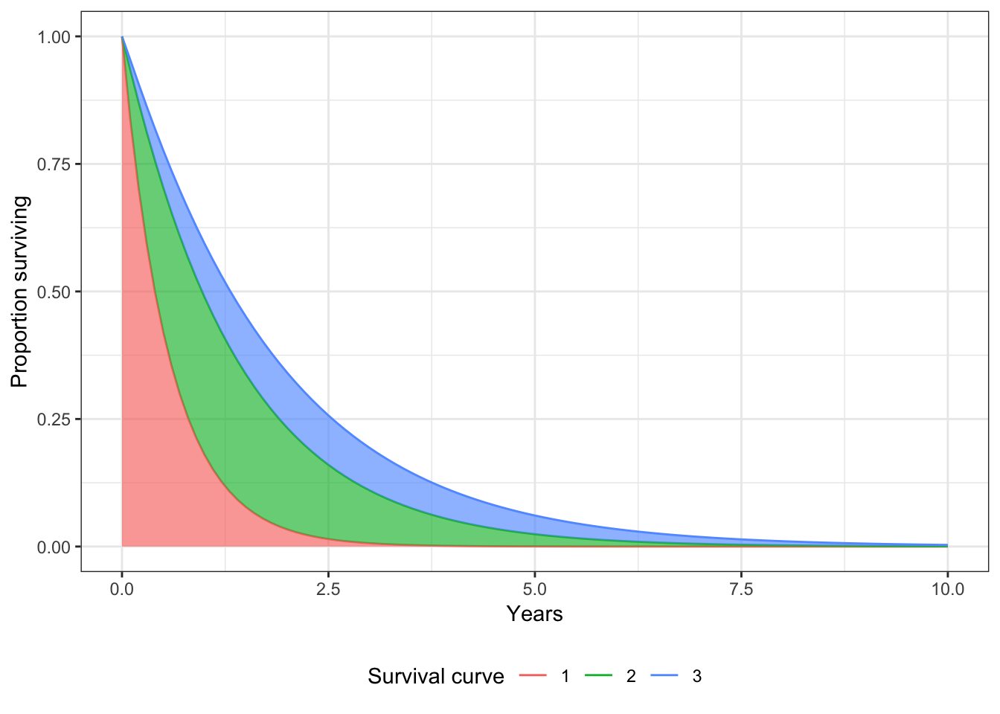
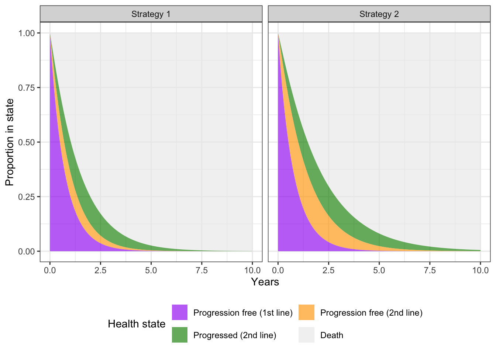

An N-state partitioned survival model (PSM) simulates the probability that a patient is in each of N distinct health states at a given point of time when treated by a particular therapy. State membership is estimated from a set of non-mutually exclusive survival curves; for an N-state model, N-1 survival curves are required.
The cumulative survival function, \(S(t)_n\), represents the probability that a patient survives to health state \(n\) or to a lower indexed state beyond time \(t\). The probability that a patient is in health state 1 is always just \(S(t)_1\). State membership in health states \(2,\ldots, n-1\) is calculated as \(S(t)_{n} - S(t)_{n-1}\). Finally, the probability of being in the final health state \(n\) (i.e., the dead state) is \(1-S(t)_{n-1}\), or one minus the overall survival curve.
In hesim, an N-state PSM consists of three types of separate statistical models: a set of N-1 survival models, a model of the utility values to assign to each health state, and a set of models for costs to assign to each health state. Multiple cost models can be used to categorize costs into different categories (e.g., costs of medical care, drug costs). All models can either be fit using R or constructed with external data.
Separate survival curves are predicted for each treatment strategy and patient. That is, the probability of survival given a survival model with \(L\) parameters, \(\alpha_1, \ldots, \alpha_L\), for patient \(i\) at time \(t\) with treatment strategy \(k\) is given by,
\[ \begin{aligned} S_{ik}(t) &= 1 - F(y_{ik} | \alpha_1(x_{1, ik}), \ldots, \alpha_L(x_{L, ik})),\\ \alpha_l &= g^{-1}(x_{l,ik}^T \beta_l), \end{aligned} \]
where \(F(\cdot)\) is the cumulative distribution function for a non-negative continuous variable, \(y\), reflecting time to an event, \(g^{-1}(\cdot)\) is an inverse transformation function, \(\beta_l\), is a vector of coefficients and \(x_l\) is an input vector of covariates. Likewise, we predict utility and cost values, \(v\), in health state \(h\) for patient \(i\) with treatment strategy \(k\),
\[ \begin{aligned} \hat{v} &= E(v_{hik} | \alpha_1(x_{1, ikl}), \ldots, \alpha_L(x_{L, hik})),\\ \alpha_l &= g^{-1}(x_{l, hik}^T \beta_l). \end{aligned} \] Quality-adjusted life-years (QALYs) and total costs associated with a given health state for a given treatment strategy and patient are calculated by integrating the “weighted” probability of survival, where weights are a function of the discount factor and predicted state values. Mathematically, QALYs and total costs for the \(m\)th cost category are calculated as,
\[ \begin{aligned} \rm{QALYs}_{hik} &= \int_{0}^{T} q_{hik} e^{-rt} p_{hik}(t)dt, \\ \rm{Costs}_{m,hik} &= \int_{0}^{T} c_{m,hik} e^{-rt} p_{hik}(t)dt, \end{aligned} \] where \(t\) denotes time (typically a year), \(q\) is a quality-of-life weight, \(c\) represents (assuming that time is measured in years) annualized costs, \(r\) is the discount rate, and \(p(t)\) is the probability of being in a given health state at a given time, and QALYs and costs are calculated over \(T\) time periods.
To illustrate a partitioned survival analysis, consider the evaluation of a two-line sequential treatment strategy in oncology using a 4-state PSM. The 4 health states might be:
We begin by defining the population, treatment strategies, and model structure. In this example, we model three treatment strategies, three distinct patients (that differ in age and gender), and four health states (death and three non-death states). This information is combined using hesim_data(), which creates a general object of class hesim_data.
library("data.table")
library("hesim")
set.seed(101)
strategies_dt <- data.table(strategy_id = c(1, 2, 3))
patients_dt <- data.table(patient_id = seq(1, 3),
age = c(45, 50, 60),
female = c(0, 0, 1))
states_dt <- data.frame(state_id = seq(1, 3),
state_name = c("Progression free (1st line)",
"Progression free (2nd line)",
"Progressed (2nd line)"),
stringsAsFactors = FALSE)
hesim_dat <- hesim_data(strategies = strategies_dt,
patients = patients_dt,
states = states_dt)
print(hesim_dat)## $strategies
## strategy_id
## 1: 1
## 2: 2
## 3: 3
##
## $patients
## patient_id age female
## 1: 1 45 0
## 2: 2 50 0
## 3: 3 60 1
##
## $states
## state_id state_name
## 1 1 Progression free (1st line)
## 2 2 Progression free (2nd line)
## 3 3 Progressed (2nd line)
##
## attr(,"class")
## [1] "hesim_data"The parameters of the survival models would typically be estimated in one of two ways. First, if access to patient level data from a clinical trial were available, survival models would be fit using available R packages. Second, a formal evidence synthesis—such as a network meta-analysis—might be conducted. Here, we provide an example of an analysis with trial level data.
We consider a dataset with three survival endpoints with endpoint 1 denoting the lowest indexed state, endpoint 2 the next indexed state, and endpoint 3 representing overall survival. In our example, endpoint 1 represents progression on 1st line treatment, endpoint 2 represents progression on 2nd line treatment, and endpoint 3 represents death.
Survival models in hesim can be fit using either flexsurvreg or flexsurvspline from the flexsurv package. hesim currently supports parametric (exponential, Weibull, Gompertz, gamma, log-logistic, lognormal, and generalized gamma) and spline survival models. In this example, we fit a Weibull model to each of the three survival endpoints. We then create an object of class partsurvfit, which stores the fitted survival models along with the data using for the fitting.
library("flexsurv")
surv_dataset <- psm4_exdata$survival
fit1 <- flexsurv::flexsurvreg(Surv(endpoint1_time, endpoint1_status) ~ age + female +
factor(strategy_id),
data = surv_dataset,
dist = "weibull")
fit2 <- flexsurv::flexsurvreg(Surv(endpoint2_time, endpoint2_status) ~ age + female +
factor(strategy_id),
data = surv_dataset,
dist = "weibull")
fit3 <- flexsurv::flexsurvreg(Surv(endpoint3_time, endpoint3_status) ~ age + female +
factor(strategy_id),
data = surv_dataset,
dist = "weibull")
psfit_wei <- partsurvfit(flexsurvreg_list(fit1, fit2, fit3),
data = surv_dataset)Although utility and cost models can be fit using regression models, in many cases, we won’t fit a model directly, but will use estimated mean values from published sources. In this case, we can use a stateval_tbl() to store estimates. For instance, consider an example where we are only given a range of values for utility and we therefore approximate the posterior distribution of mean utility values by health state using a uniform distribution.
utility_tbl <- stateval_tbl(tbl = data.frame(state_id = states_dt$state_id,
min = psm4_exdata$utility$lower,
max = psm4_exdata$utility$upper),
dist = "unif",
hesim_data = hesim_dat)Similar to utility, we will not simulate drug costs based on a statistical model but will instead use published estimates. Drug costs will only vary by treatment strategy (i.e., they do not vary by health state or across samples in the PSA).
drugcost_tbl <- stateval_tbl(tbl = data.frame(strategy_id = strategies_dt$strategy_id,
est = psm4_exdata$costs$drugs$costs),
dist = "fixed",
hesim_data = hesim_dat)For cases in which we want to use a regression model to simulate costs, hesim supports parameterizing a cost or utility model using linear models. Here, we fit a model for medical costs as a function of the three non-death health states using the lm() function in R.
medcosts_fit <- stats::lm(costs ~ female + state_name, data = psm4_exdata$costs$medical)A PSM in hesim is an R6 object of class Psm and comprises of three separate submodels: (1) a set of survival models for generating survival curves (of class PsmCurves), (2) a utility model (of class StateVals), and (3) a set of cost models for each cost component (a list of StateVals objects). Since analyses in hesim are, by default, based on sampled values of the parameters from their joint posterior distribution in order to facilitate probabilistic sensitivity analysis (PSA), we will specify the number of sampled parameter sets that are desired.
n_samples <- 100Survival curves are simulated using PsmCurves objects. We can create a PsmCurves object using create_PsmCurves() as a function of our partsurvfit object and a dataset of class expanded_hesim_data containing the variables and row identifiers needed for predictive modeling.
To conduct the PSA, we must sample random draws of the regression coefficients from their posterior distribution, which can be done in one of two ways. First, the parameters of each survival model can be sampled separately using a multivariate normal distribution. However, this option does not preserve the correlation in the survival endpoints. By default, create_PsmCurves() consequently samples the parameters via bootstrapping, whereby the survival models are refit repeatedly to resamples of the data element in a partsurvfit object.
surv_data <- expand(hesim_dat, by = c("strategies", "patients"))
survmods <- create_PsmCurves(psfit_wei, data = surv_data, n = n_samples,
bootstrap = TRUE)Utility and cost values are simulated using models of class StateVals. We can instantiate a StateVals object from a ’stateval_tbl` object, which creates a “mean model” that predicts mean state values for each treatment strategy, patient, and health state combination. In the utility model, utility only varies across health states and is constant within patients and treatment strategies conditional on health state.
utilitymod <- create_StateVals(utility_tbl, n = n_samples)We take a similar approach for drug costs, in which costs only vary across treatment strategies.
drugcostmod <- create_StateVals(drugcost_tbl, n = n_samples)Finally, we can also instantiate a StateVals() from a fitted linear model and a corresponding dataset of class expanded_hesim_data.
medcost_data <- expand(hesim_dat, by = c("strategies", "patients", "states"))
medcostmod <- create_StateVals(medcosts_fit, data = medcost_data,
n = n_samples)Survival curves are predicted by treatment strategy and patient with the function $sim_survival(). The predicted curves are returned as a tidy data.table to facilitate plotting and stored as a field in the class named survival_. Below we plot the mean survival curve for patient 2 with treatment strategy 3.
# Simulate
times <- seq(0, 10, by = .1)
psm$sim_survival(t = times)
# Plot
library("ggplot2")
surv_means <- psm$survival_[, .(mean_surv = mean(survival)),
by = c("curve", "strategy_id", "patient_id", "t")]
theme_set(theme_bw())
p_data <- surv_means[strategy_id == 3 & patient_id == 2]
p_data[, curve := factor(curve)]
p_data[, mean_surv_min := c(rep(0, length(times)), p_data[curve !=3, mean_surv])]
ggplot(p_data, aes(x = t, y = mean_surv, fill = curve)) +
geom_line(aes(col = curve)) +
geom_ribbon(aes(ymin = mean_surv_min, ymax = mean_surv), alpha = .65) +
xlab("Years") + ylab("Proportion surviving") +
scale_color_discrete(name = "Survival curve") +
guides(fill = FALSE) +
theme(legend.position = "bottom")
After simulating survival, we can calculate the probability of being in each of the four health states using $sim_stateprobs(). At a given point in time, the probability of being in state 1 is the survival probability from the first survival curve, the probability of being in state 2 is the difference in survival probabilities between the 2nd and 1st curves, the probability of being in state 3 is the difference in survival probabilities between the 3rd and 2nd curves, and the probability of death is 1 minus the survival probability from curve 3. We plot these state probabilities for the first patient with the 30th randomly sampled parameter set.
# Simulate
psm$sim_stateprobs()
# Plot
stateprobs <- psm$stateprobs_[sample == 30 & patient_id == 1]
stateprobs[, state := factor(state_id,
levels = rev(unique(state_id)))]
stateprobs[, strategy := factor(strategy_id, labels = c("Strategy 1", "Strategy 2",
"Strategy 3"))]
ggplot(stateprobs[strategy_id %in% c(1, 2)],
aes(x = t, y = prob, fill = state, group = state)) +
geom_area(alpha = .65) + facet_wrap(~strategy) +
xlab("Years") + ylab("Proportion in state") +
scale_fill_manual(name = "Health state",
values = c("gray92", "green4", "orange", "purple"),
labels = c("Death",
rev(hesim_dat$states$state_name))) +
guides(fill = guide_legend(reverse = TRUE)) +
theme(legend.position = "bottom")
Finally, we can simulate discounted costs and QALYs by numerically integrating the “weighted” probabilities in $stateprobs_ as described above. Costs and QALYs are produced for each treatment strategy, patient, health state, and sampled parameter set.
# Costs
psm$sim_costs(dr = .03)
head(psm$costs_)## sample strategy_id patient_id state_id dr category costs
## 1: 1 1 1 1 0.03 medical 16701.379
## 2: 1 1 1 2 0.03 medical 7633.707
## 3: 1 1 1 3 0.03 medical 17411.772
## 4: 1 1 2 1 0.03 medical 15929.483
## 5: 1 1 2 2 0.03 medical 7408.622
## 6: 1 1 2 3 0.03 medical 16593.823# QALYs
psm$sim_qalys(dr = .03)
head(psm$qalys_)## sample strategy_id patient_id state_id dr category qalys
## 1: 1 1 1 1 0.03 qalys 0.5285081
## 2: 1 1 1 2 0.03 qalys 0.1752568
## 3: 1 1 1 3 0.03 qalys 0.3472255
## 4: 1 1 2 1 0.03 qalys 0.5040817
## 5: 1 1 2 2 0.03 qalys 0.1700892
## 6: 1 1 2 3 0.03 qalys 0.3309139